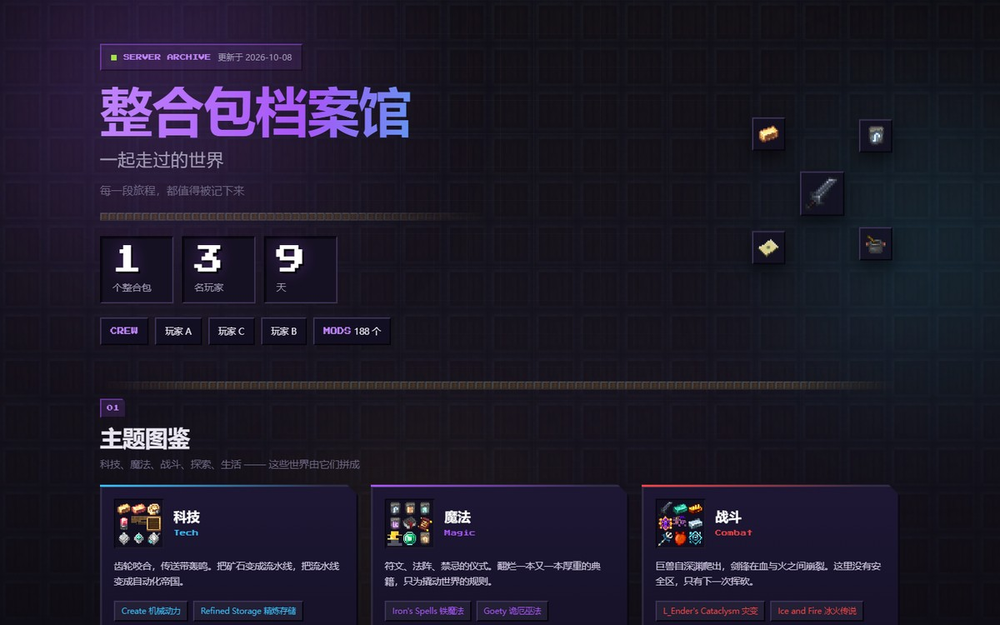
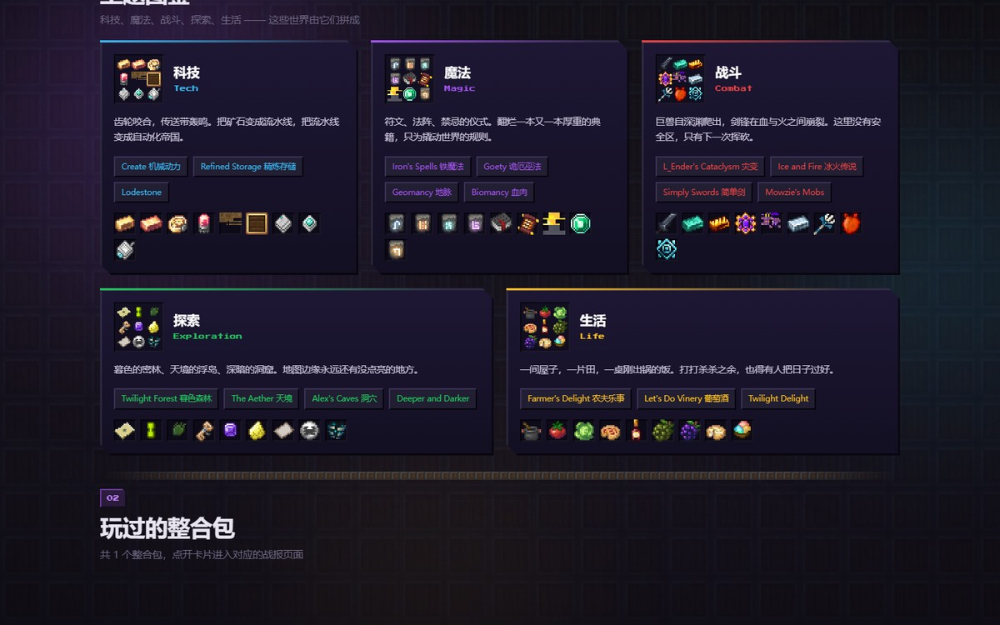
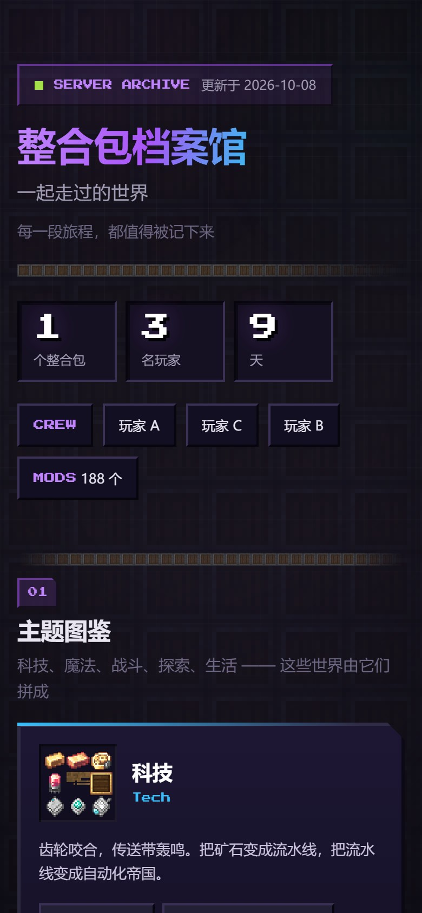

项目概览
我搭建并维护了一台 Minecraft 模组服务器，供三名玩家游玩。服务器运行九天后，我想把一些能回看的记录整理出来：谁挖了多少方块、哪天最热闹、任务推进到哪一章。
于是有了「整合包档案馆」：一个静态网站，主页汇总游玩过的整合包，每个整合包有自己的战报页。目前先收录了一次游玩记录。
网站开发由我主导：需求定义、数据源勘察、技术选型、方案设计和结果验收由我完成；编码实现借助 AI 协作，我负责提出约束、审阅产出并逐项验证。三名玩家参与了游玩，没有参与网站开发。

问题与约束
动手之前，有四个绕不开的限制。
- 现成面板用不上。服务端是 Forge 模组服，不是 Paper/Spigot，常见的插件式统计面板无法直接安装。数据要从存档和日志中提取。
- 数据散在五个地方。原版统计在
world/stats/*.json；聊天与事件在九天共 28 MB 的控制台日志里，GBK 编码；任务进度是 FTB Quests 的 SNBT 文件；还有聊天机器人的行为记录。 - 不增加新费用。使用已有的云服务器和家里的一台电脑，没有额外采购。
- 有隐私边界。日志里含三个人的聊天记录，公开之前必须自己划清哪些能放出去。
我的工作
一、摸清数据源。逐个打开文件确认格式，判断哪些能读、哪些读不了。这一步踩的坑最多，后面单独说。
二、写采集脚本。用 Python 从存档和日志里抽数据——玩家统计、每日活跃、成就时间线、任务进度——归一到一份 JSON，作为页面的唯一数据源。
三、做前端。门户页加战报页，纯静态 HTML/CSS/JS，没有构建步骤，不依赖任何外部 CDN。
四、部署。服务器上用 nginx 提供 HTTPS，域名签 Let's Encrypt 证书。

关键选择
选择一：门户加自包含子页面，而不是做成一整页。
我们大概率还会玩下一个整合包。如果所有内容写死在一页里，下次就得动结构。所以定成：主页从 data/packs.json 读清单渲染卡片，每个整合包是自包含目录，带自己的样式、脚本和数据。
结果是加新整合包只要两步：把战报页丢进 packs/<名字>/，再往 JSON 数组里加一条记录。主页一行代码都不用改。
代价是每个子页面各带一份图表库和字体，多了几十 KB；换来的是子页面能单独交付、互不影响。
选择二：素材不从网上找，直接从模组文件里抽。
网站需要与所玩的模组保持一致。网上找图来源不易追溯，风格也难统一。
我改成从本机 188 个模组文件里抽原始像素贴图：每个主题挑九个代表物品，拼成一张九宫格图标。好处是来源可追溯、风格统一，中文名还能直接取模组自带的官方译名。放大只用最近邻插值，保住像素的锐利边缘。
验证与结果
- 站点规模：项目交付记录为 156 个文件、约 0.9 MB。页面资源由站点自身提供，不依赖第三方 CDN。
- 浏览器检查：自动化脚本在 1440 / 820 / 390 三档宽度下均无横向滚动，控制台 0 报错，「进入战报」与「返回档案馆」双向跳转正常。
- 数据核对：页面数字直接从存档与日志算出——9 天、3 名玩家、累计在线 158.7 小时、主线任务 284 / 491。
- 公开展示：本文只放脱敏后的页面截图，不提供可识别该整合包的实例链接。
局限：目前只有一个整合包，「多整合包」的设计还没被真实使用检验过；数据是脚本一次性生成的快照，不是实时更新。

复盘
三个坑值得单独记下来：
- 1.17 之后实体不在
world/region/了。我按老经验扫区块文件，扫出 17.8 万个区块、实体数为 0。查了才知道实体挪到了独立的world/entities/。 - 日志里的玩家名长度不可控。解析聊天记录的正则我限了名字最多 16 个字符，结果带模组称号的名字有 31 个字符，整行被静默丢弃——症状是「只能看到某一个人的发言」。
- 中文编码。日志是 GBK，脚本是 UTF-8，Windows 命令行又是另一套。这类问题不会报错，只会让你看到乱码然后怀疑自己。
下一步：把一次性快照改成可按时间增量更新，这样主页能显示「最近一次更新」，而不是一个写死的统计周期。